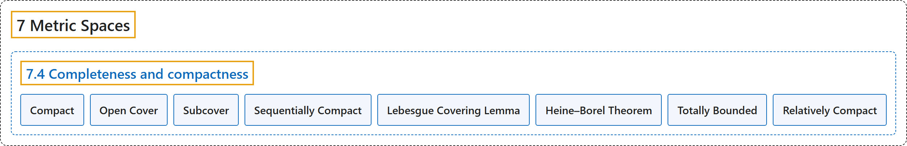

7.4 Completeness and compactness
Classification

Glossary
| Term | Definition | 中文翻译 | Source |
|---|---|---|---|
| 7.4 Completeness and compactness 完备性与紧性 |
(No definition) | （无定义） | Lebl, 2026, section 7.4 |
| Compact 紧 |
"Let \((X,d)\) be a metric space and \(K \subset X\). The set \(K\) is said to be compact if for every collection of open sets \(\{ U_{\lambda} \}_{\lambda \in I}\) such that \(K \subset \bigcup_{\lambda \in I} U_\lambda\), there exists a finite subset \(\{ \lambda_1, \lambda_2,\ldots,\lambda_m \} \subset I\) such that \(K \subset \bigcup_{j=1}^m U_{\lambda_j}\)." | 设 \((X,d)\) 是度量空间，\(K \subset X\)。若对每个满足 \(K \subset \bigcup_{\lambda \in I} U_\lambda\) 的开集族 \(\{ U_{\lambda} \}_{\lambda \in I}\)，都存在有限子集 \(\{ \lambda_1, \lambda_2,\ldots,\lambda_m \} \subset I\) 使得 \(K \subset \bigcup_{j=1}^m U_{\lambda_j}\)，则称集合 \(K\) 是紧的。 | Lebl, 2026, Definition 7.4.7 |
| Open Cover 开覆盖 |
"A collection of open sets \(\{ U_{\lambda} \}_{\lambda \in I}\) as above is said to be an open cover of \(K\)." | 上述那样的开集族 \(\{ U_{\lambda} \}_{\lambda \in I}\) 称为 \(K\) 的开覆盖。 | Lebl, 2026, section 7.4 |
| Subcover 子覆盖 |
"A way to say that \(K\) is compact is to say that every open cover of \(K\) has a finite subcover." | 说 \(K\) 是紧的，一种说法是：\(K\) 的每个开覆盖都有有限子覆盖。 | Lebl, 2026, section 7.4 |
| Sequentially Compact 序列紧 |
"A useful property of compact sets in a metric space is that every sequence in the set has a convergent subsequence converging to a point in the set. Such sets are called sequentially compact." | 度量空间中紧集的一个有用性质是：集合中的每个序列都有收敛到集合中某点的收敛子序列。这样的集合称为序列紧的。 | Lebl, 2026, section 7.4 |
| Lebesgue Covering Lemma 勒贝格覆盖引理 |
"Let \((X,d)\) be a metric space and \(K \subset X\). Suppose every sequence in \(K\) has a subsequence convergent in \(K\). Given an open cover \(\{ U_\lambda \}_{\lambda \in I}\) of \(K\), there exists a \(\delta > 0\) such that for every \(x \in K\), there exists a \(\lambda \in I\) with \(B(x,\delta) \subset U_\lambda\)." | 设 \((X,d)\) 是度量空间，\(K \subset X\)，且 \(K\) 中每个序列都有在 \(K\) 中收敛的子序列。给定 \(K\) 的开覆盖 \(\{ U_\lambda \}_{\lambda \in I}\)，存在 \(\delta > 0\)，使得对每个 \(x \in K\)，存在 \(\lambda \in I\) 满足 \(B(x,\delta) \subset U_\lambda\)。 | Lebl, 2026, Lemma 7.4.10 |
| Heine–Borel Theorem 海涅–博雷尔定理 |
"A closed bounded subset \(K \subset \mathbb{R}^n\) is compact." | \(\mathbb{R}^n\) 的有界闭子集 \(K \subset \mathbb{R}^n\) 是紧的。 | Lebl, 2026, Theorem 7.4.14 |
| Totally Bounded 完全有界 |
"Show that \(K \subset X\) is compact if and only if \(K\) is closed and such that for every \(\epsilon > 0\) there exists a finite set of points \(x_1,x_2,\ldots,x_n\) with \(K \subset \bigcup_{j=1}^n B(x_j,\epsilon)\). Note: Such a set \(K\) is said to be totally bounded." | 证明 \(K \subset X\) 是紧的，当且仅当 \(K\) 是闭集，且对每个 \(\epsilon > 0\)，存在有限个点 \(x_1,x_2,\ldots,x_n\) 使得 \(K \subset \bigcup_{j=1}^n B(x_j,\epsilon)\)。注：这样的集合 \(K\) 称为完全有界的。 | Lebl, 2026, Exercise 7.4.12 |
| Relatively Compact 相对紧 |
"Let \((X,d)\) be a complete metric space. We say a set \(S \subset X\) is relatively compact if the closure \(\overline{S}\) is compact." | 设 \((X,d)\) 是完备度量空间。若闭包 \(\overline{S}\) 是紧的，则称集合 \(S \subset X\) 相对紧。 | Lebl, 2026, Exercise 7.4.20 |
References
Lebl, J. (2026). Basic analysis I & II: Introduction to real analysis (May 22, 2026 edition). Retrieved October 29, 2026, from https://www.jirka.org/ra/html/